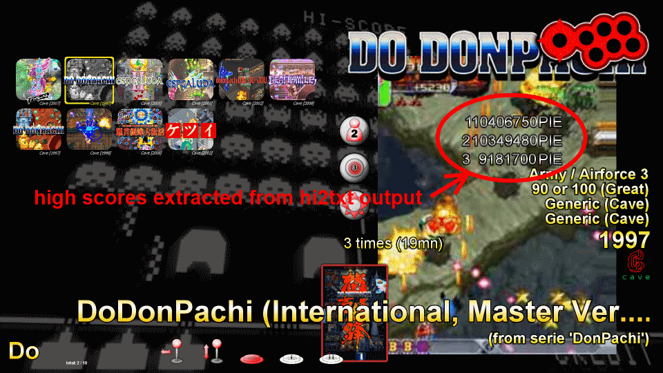

Introduction
What are high scores?
How to read high scores from a mame installation?
How to support a new game?
XML description reference
Step-by-step examples
It doesn't work...
Contact
Introduction
hi2txt allows to convert mame (and similar emulators) high scores files (hi/nvram binary files) into readable text files, targeting integration into third party software like frontend (see below screenshot), or centralized leaderboard sharing friends score.
It is written either in Java 7+ or either in CSharp (dotNET 4.5+), depending on the version you choose.

The functionality is completely inspired from the hitotext tool created by Fyrecrypts, even if all the code have been written from scratch, as well as the XML syntax. A huge thanks to all these guys for the unbelievable amount of work achieved by decoding many many many games hiscores! Note that hi2txt doesn't allow writing/formating hiscores at all, which remains an exclusive feature of hitotext :)
Why another tool? First, for my own pleasure as a hobbyist, allowing high scores display in my personal mame cabinet front-end and increasing my programming skills. Then because high score competition is the heart of Arcade games along with 1-CC! Finally to learn from the experience of hitotext, keeping this wonderful functionality alive.
If you appreciate the tool, all possible help to support more games and
suggest new features, is warmly welcome, or at least a little thank you !
This software is dual-licensed as postcard-ware and screenshot-ware: either
send me a postcard from your town and/or a screenshot of your high scores
displayed using hi2txt on your Cab/PC/whatever :)
(see 'Contact' section)
What are high scores?
Native high scores
Mame is a game emulator
It is working with ROMs of the supported games
If a game has a native support for saving high scores, mame saves them inside
the related nvram file (non volative random access memory)
mame/nvram/<game>/<nvram_file>
Iif a game doesn't natively support high scores saving... the high scores are
not saved :)
Unofficial high scores
Saving high scores for these games is a non standard feature, not supported
officially by mame
To activate it:
Alternatively, from native mame 0.172+, a hiscore plugin is embedded and is compatible with hi2txt 1.7+.
Iin this case, mame saves the high scores inside the related hi file
mame/hi/<game>/<game>.hi
Note that hiscore.dat file doesn't support yet all mame games
Reading high scores
High scores in nvram and hi files are stored using game-specific format
A specific description of the nvram/hi files content is needed to understand
how the high scores are stored and consequently display them is user-friendly
format like text
A game supported by hi2txt means that a specific description exists
hi2txt/db/<game>.xml
Note that hi2txt doesn't support yet all hiscore.dat games
Task: extract hiscores in text format
hi2txt.bat -hiscoredat <hiscore.dat_file> [-descr
<descriptions_directory>] [-trace | -notrace] -r <hi_file_path>
ex: hi2txt.bat -hiscoredat <mame_installation>/hiscore.dat -r
<mame_installation>/hi/ddonpach
output example:
RANK|SCORE|NAME|AREA|SPACESHIP|POWERUP|MAXHIT
1|468395520|PIE|ALL|RED|SHOT|359
2|5908065|OSD|1|BLUE|LASER|96
3|5637680|PIE|2-3|GREEN|SHOT|139
4|5544337|H.S|1|BLUE|LASER|96
5|3027206|PIE|5|RED|SHOT|170
Task: extract hiscores and extra data in text
format
hi2txt.bat -hiscoredat <hiscore.dat_file> [-descr
<descriptions_directory>] [-trace | -notrace] -ra <hi_file_path>
ex: hi2txt.bat -hiscoredat <mame_installation>/hiscore.dat -ra
<mame_installation>/hi/ddonpach
output example:
RANK|SCORE|NAME|AREA|SPACESHIP|POWERUP|MAXHIT
1|468395520|PIE|ALL|RED|SHOT|359
2|5908065|OSD|1|BLUE|LASER|96
3|5637680|PIE|2-3|GREEN|SHOT|139
4|5544337|H.S|1|BLUE|LASER|96
5|3027206|PIE|5|RED|SHOT|170
TOP SCORE
468395520
Task: list supported games
hi2txt.bat [-descr <descriptions_directory>] -l
[-location]
Task: get version
hi2txt.bat -v
Task: get help
hi2txt.bat -h
all command-line parameters
A new xml description file must be added into the description database.
This description needs to describe how to extract the meaningful data in text
format from the game related hi and/or nvram files.
The description language is in xml, using specific tags.
Recommended methodology to build a hiscores description: